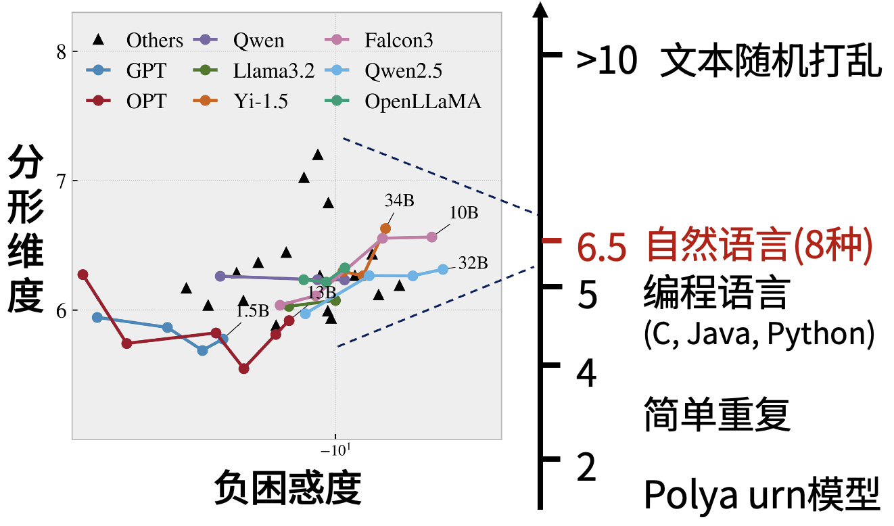

Physical Review Research 2024 · Foundation Models & Complexity
Correlation Dimension of Natural Language in a Statistical Manifold
Prediction distributions define language states and Fisher–Rao distance defines their geometry, allowing correlation dimension to be reconstructed on a non-Euclidean statistical manifold.
Why Dimension Is Difficult for Discrete Language
Fractal dimension describes how many new degrees of freedom appear as observational resolution increases. Physical variables usually provide coordinates and distance for a continuous dynamical system. Natural language appears only as discrete symbols. Converting a passage into counts or embeddings and measuring Euclidean distance makes the result depend on an arbitrary representation. Before fitting a scaling slope, the paper must define a statistically meaningful geometry for language states.
Formally, the complete language state at position is the conditional distribution over all possible futures:
This object is not enumerable. A language model provides an observable projection: the next-token conditional distribution
For Markov-generated sequences, the paper proves that this marginalization preserves correlation dimension. For long-memory natural language, the observed dimension is an approximation or lower bound on that of the complete state.
A Natural Metric on the Probability Simplex
Each lies on the vocabulary probability simplex. Fisher–Rao geometry is invariant to reparameterization and therefore does not encode an arbitrary coordinate system into the distance. For multinomial distributions it reduces to the Bhattacharyya angle:
The Grassberger–Procaccia correlation integral can then be reconstructed on the manifold. If the fraction of state pairs within obeys
then is the effective dimension of the predictive states at that scale. A valid estimate requires a stable power law over a scaling interval, not density at a single radius. Grouping approximately 50,000 tokens into 1,000 modulo classes preserves the dimension while reducing distance computation by roughly 50 times.
Local and Global Self-Similarity
Real text contains two sources of scaling. Around low-entropy positions, a few tokens hold most probability; an independent Dirichlet mixture can reproduce similar local geometry, so this local fractality mainly reflects the boundary of the simplex. The paper isolates high-entropy states satisfying to study global self-similarity that depends more strongly on context.
For Don Quixote, the correlation integral follows stable scaling across more than six orders of magnitude in distance, giving dimension 6.42. With context shorter than 32 tokens, the global scaling interval narrows sharply; as context grows, it approaches the 512-token result. The low-entropy local structure barely changes. Global self-similarity therefore depends on access to long history rather than static token frequency alone.

A Global Structure of Approximately Six to Seven Dimensions
The study includes 144 books in English, Chinese, German, and Japanese, plus 342 long English texts from books, papers, encyclopaedias, and the Stanford Encyclopedia of Philosophy. Mean dimensions are 6.39, 6.81, 7.30, and 5.84 for English, Chinese, Japanese, and German; SEP entries average 6.57, with most fits above . GPT-2 and Yi models of different sizes give broadly consistent values.
The estimate suggests about six to seven effective degrees of freedom under the chosen observation and scale, not a model- and corpus-independent constant. An information-dimension interpretation is useful: doubling resolution at requires distinguishing approximately times as many contextual states. A very high-dimensional vocabulary is compressed into a low-dimensional but nontrivial predictive manifold.
Controls show that this range is not inevitable for discrete sequences. Shuffling word order raises dimension to about 13; random language-model weights produce roughly 80; white noise exceeds 100; a simple Barabási–Albert network is near 2. Fisher–Rao scaling is substantially more linear than Euclidean scaling on the language data.
Conclusion and Boundary
The paper provides a reproducible definition of language complexity: conditional prediction distributions represent states, Fisher–Rao distance defines geometry, and a cross-scale power law of the correlation integral defines dimension. Context experiments connect global self-similarity to long-range memory, while multilingual and randomized controls locate its scale.
Observed dimension still depends on the language model, context length, finite sample, and scaling-interval choice. A next-token distribution also does not explicitly encode structures such as syntax trees. The value near is therefore a robust baseline under the current statistical representation, not the final ontological dimension of language. Its central contribution is the conversion of symbolic text into a statistical trajectory on which criticality, attractors, and dynamical degrees of freedom become measurable.